Car bodywork
CAP Carrossier automobile. Sixteen English words of the trade: tools, objects and everyday gestures. Open to everyone.
Four steps: from French to English, listen and choose, match, and complete a sentence at work. The Listen button reads the word in British English.
Word list
| Image | Français | English | Audio |
|---|---|---|---|
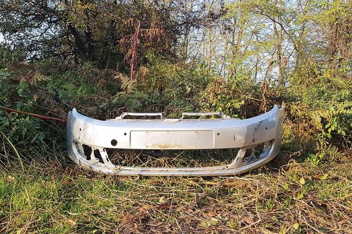 | le pare-chocs | bumper | |
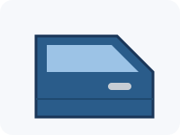 | la portière | car door | |
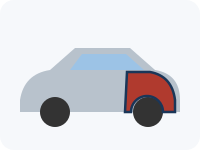 | l'aile | wing | |
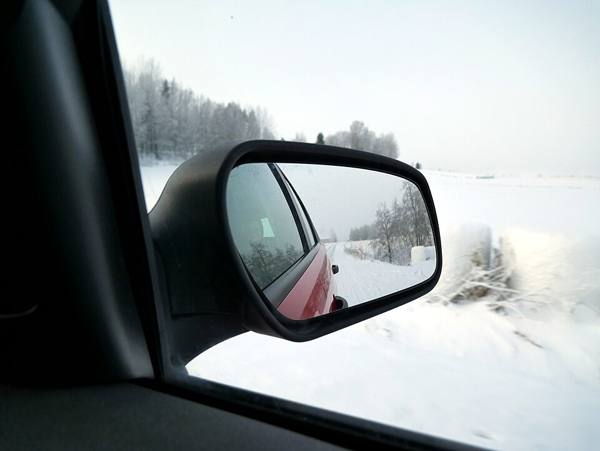 | le rétroviseur extérieur | wing mirror | |
 | le pare-brise | windscreen | |
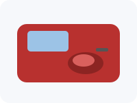 | la bosse | dent | |
| la rayure | scratch | ||
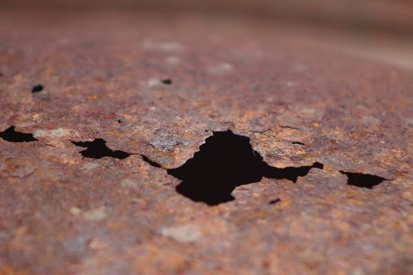 | la rouille | rust | |
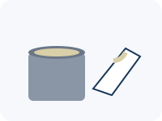 | le mastic de carrosserie | body filler | |
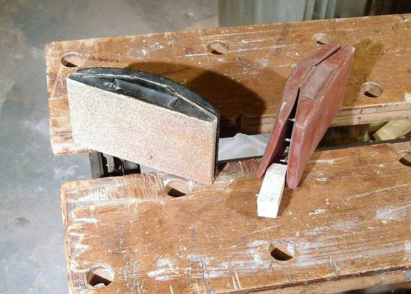 | la cale à poncer | sanding block | |
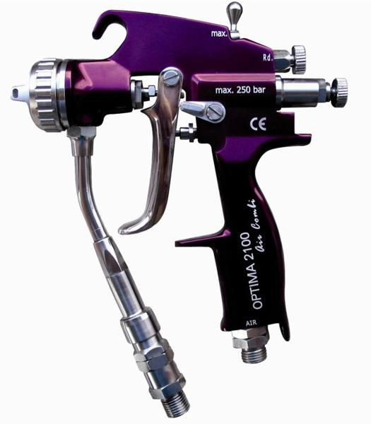 | le pistolet à peinture | spray gun | |
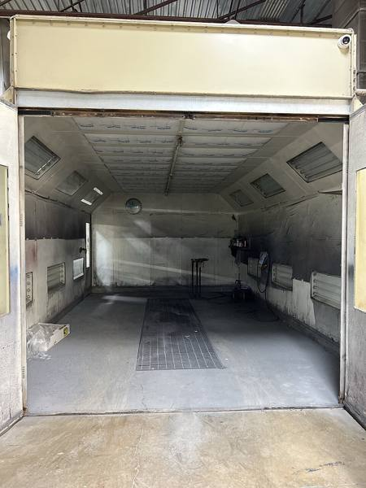 | la cabine de peinture | spray booth | |
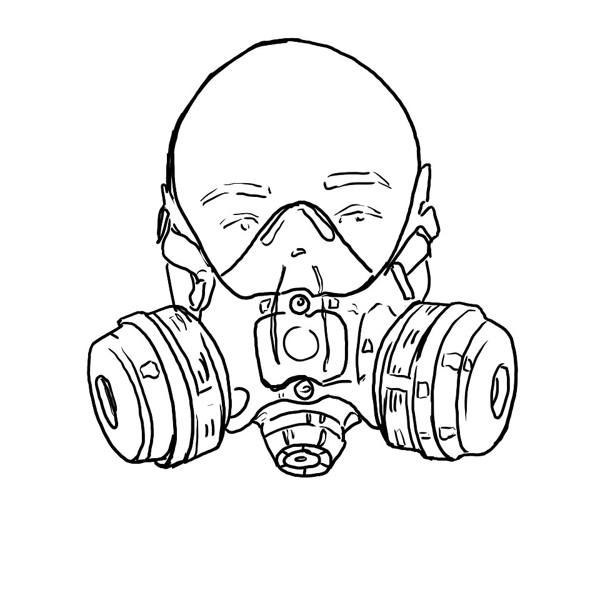 | le masque respiratoire | respirator | |
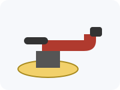 | la polisseuse | polisher | |
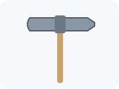 | le marteau de carrossier | body hammer | |
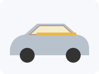 | le papier de masquage | masking paper |
Teacher key: sentences at work
- There is a big ________ in the door. (dent)
- Fill the hole with ________. (body filler)
- Paint the car in the ________. (spray booth)
- Wear a ________ when you paint. (respirator)
- Sand the filler with a ________. (sanding block)
- Cover the windows with ________. (masking paper)
In steps 1, 2 and 3, the right answer is the line in the word list.
Image credits
Photos under an open licence, from Wikimedia Commons, resized for the phone. Original drawings for gestures and ideas.
- le pare-chocs (bumper) : photo by Mænsard vokser, licence CC BY-SA 4.0, file page on Wikimedia Commons.
- la portière (car door) : original drawing, Grand Tour, CC BY-NC-SA 4.0.
- l'aile (wing) : original drawing, Grand Tour, CC BY-NC-SA 4.0.
- le rétroviseur extérieur (wing mirror) : photo by Santeri Viinamäki, licence CC BY-SA 4.0, file page on Wikimedia Commons.
- le pare-brise (windscreen) : photo by Malinaccier, licence CC BY 3.0, file page on Wikimedia Commons.
- la bosse (dent) : original drawing, Grand Tour, CC BY-NC-SA 4.0.
- la rayure (scratch) : original drawing, Grand Tour, CC BY-NC-SA 4.0.
- la rouille (rust) : photo by Salem Ander, licence CC BY-SA 4.0, file page on Wikimedia Commons.
- le mastic de carrosserie (body filler) : original drawing, Grand Tour, CC BY-NC-SA 4.0.
- la cale à poncer (sanding block) : photo by Just plain Bill, licence CC BY-SA 3.0, file page on Wikimedia Commons.
- le pistolet à peinture (spray gun) : photo by Bersch & Fratscher GmbH, licence CC BY-SA 3.0 de, file page on Wikimedia Commons.
- la cabine de peinture (spray booth) : photo by Scientificranking, licence CC BY 4.0, file page on Wikimedia Commons.
- le masque respiratoire (respirator) : photo by Another-anon-artist-234, licence CC0, file page on Wikimedia Commons.
- la polisseuse (polisher) : original drawing, Grand Tour, CC BY-NC-SA 4.0.
- le marteau de carrossier (body hammer) : original drawing, Grand Tour, CC BY-NC-SA 4.0.
- le papier de masquage (masking paper) : original drawing, Grand Tour, CC BY-NC-SA 4.0.
Vocabulary sheet to print
Large type (16 point minimum), in three formats: